|
News
- 10/2023: Congratulations, we have published a paper titled "Robust Calibration of Vehicle Solid-state Lidar-Camera Perception System Using Line-Weighted Correspondences in Natural Environments" in IEEE Transactions on Intelligent Transportation Systems
- 09/2023: Congratulations, our team won the Best Workshop Presentation Award at the ISPRS Geospatial Week 2023 International Conference for 'Tree-GPT: Modular Large Language Model Expert System for Forest Remote Sensing Image Understanding and Interactive Analysis'.
- 09/2023: We organize a special issue in Remote Sensing. Special issue on Remote Sensing for 2D/3D Mapping”. Welcomes contributions from researchers and experts in the field. Submission Date End: 31 Mar 2024.
- 08/2023: Congratulations, we have published a paper titled "Skeleton-guided generation of synthetic noisy point clouds from as-built BIM to improve indoor scene understanding" in the Automation in Construction journal. The publicly available 3D point cloud simulation dataset provided by the paper can be accessed at the following link: BIMSyn Dataset.
- 07/2023: We organize a special issue in IEEE JSTAR.Special issue on “High-fidelity Urban 3D Modeling and Scene Simulation”. Welcomes contributions from researchers and experts in the field. Submission Date Start: 01 Oct 2023; Submission Date End: 30 Apr 2024.
- 05/2023: One papers is submitted to ISPRS Journal
- 03/2023: One papers are submitted to IEEE T-ITS
- 11/2022: One papers is submitted to Automation in Construction
|
|
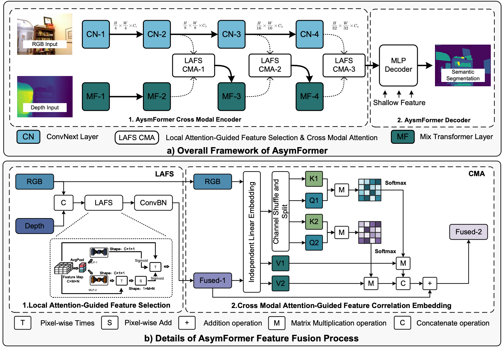
|
AsymFormer: Asymmetrical Cross-Modal Representation Learning for Mobile Platform Real-Time RGB-D Semantic Segmentation (arXiv preprint)
Siqi Du, Weixi Wang, Renzhong Guo and Shengjun Tang*
Submitted to ICRA 2024
Link | Code
In this work, we propose AsymFormer, a novel network for real-time RGB-D semantic segmentation, which targets the minimization of superfluous parameters by optimizing the distribution of computational resources and introduces an asymmetrical backbone to allow for the effective fusion of multimodal features..
|
|
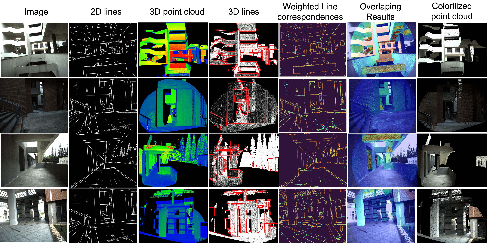
|
Robust Calibration of Vehicle Solid-state Lidar-Camera Perception System Using Line-Weighted Correspondences in Natural Environments(Accepted)
Shengjun Tang, Yunqi Feng, Junjie Huang, Xiaoming Li, Zhihan Lv, Yuhong Feng, and Weixi Wang
IEEE Transactions on Intelligent Transportation Systems, 2023
Link
In this paper, we present a novel approach for robustly calibrating the extrinsic parameters of a solid-state(SS) lidar-camera system in a natural environment. Our proposed method begins with obtaining robust line feature information.
|
|
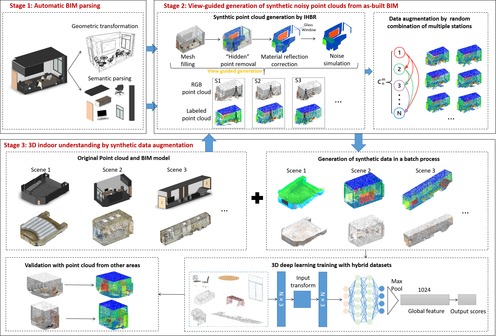
|
Skeleton-guided generation of synthetic noisy point clouds from as-built BIM to improve indoor scene understanding
Shengjun Tang, Hongsheng Huang, Yunjie Zhang, Mengmeng Yao, Xiaoming Li, Linfu Xie, and Weixi Wang
Automation in Construction, 2023
Link | Datasets
In this study, a fully automatic method to generate synthetic noisy point clouds from as-built building information modeling (BIM) models is presented and it assesses the potential of these synthetic point clouds to improve deep neural network training. All simulation datasets are publicly available, including original BIM models, full synthetic point clouds, and point clouds after IHPR processing, accessible via the following link: BIMSyn Dataset.
|
|
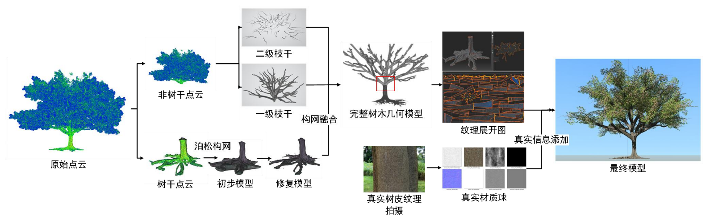
|
面向虚拟地理环境构建的树木模型高保真三维重建方法(A highly realistic 3D reconstruction method for tree models created for virtual geographic environments)
王伟玺(Weixi Wang), 黄鸿盛(Hongsheng Huang),杜思齐(Siqi Du), 李晓明(Xiaoming Li), 谢林甫(Linfu Xie), 郭仁忠(Renzhong Guo), 汤圣君(Shengjun Tang)*
遥感学报(Journal of Remote Sensing), 2023
Link
本文面向虚拟地理环境高逼真场景构建需求，提出一种基于高精度激光扫描点云数据的树木三维模型高保真仿生重建方法，可实现形态特征保持的树木三维模型自动化重建。(In this paper, we propose a bionic reconstruction method for 3D tree models based on high-precision laser scanning point cloud data for building realistic scenes in virtual geographic environments, which enables the automated reconstruction of 3D tree models at multiple levels of detail while preserving morphological features.)
|

|
超体素随机森林与 LSTM 神经网络联合优化的室内点云高精度分类方法(A High-Precision Indoor Point Cloud Classification Method Jointly Optimized by Super Voxel Random Forest and LSTM Neural Network)
汤圣君(Shengjun Tang), 张韵婕(Yunjie Zhang), 李晓明(Xiaoming Li), 姚萌萌(Mengmeng Yao), 叶致煌(Zhihuang Ye), 李亚鑫(Yaxin Li), 郭仁忠(Renzhong Guo), 王伟玺(Weixi Wang)
武汉大学学报（信息科学版）(Geomatics and Information Science of Wuhan University), 2023
Link
针对现有三维点云数据分割分类方法存在分类目标内部不一致的问题，提出一种超体素随机森林与长短期记忆神经网络(long short-term memory，LSTM)联合优化的室内点云高精度分类方法。 (In response to the problem of internal inconsistency in the classification targets of existing 3D point cloud data segmentation methods, we propose a high-precision indoor point cloud classification method that jointly optimizes super-voxel random forests and Long Short-Term Memory (LSTM) neural networks.)
|
|
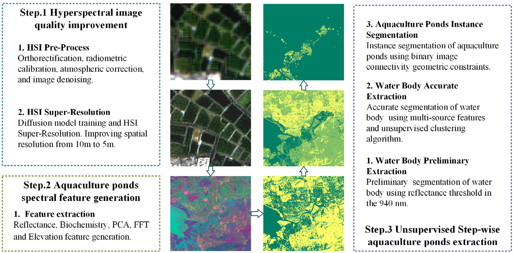
|
Unsupervised stepwise extraction of offshore aquaculture ponds using super-resolution hyperspectral images
Siqi Du, Hongsheng Huang, Fan He, Heng Luo, Yumeng Yin, Xiaoming Li, Linfu Xie, Renzhong Guo, Shengjun Tang*
International Journal of Applied Earth Observation and Geoinformation, 2023 (SCI, Top)
Link
In this paper, we proposed an unsupervised aquaculture ponds extraction method based on hyperspectral imagery super-resolution, feature fusion and stepwise extraction strategy.
|

|
An Individual Tree Segmentation Method from Mobile Mapping Point Clouds Based on Improved 3D Morphological Analysis
Weixi Wang, Yuhang Fan, You Li, Xiaoming Li, Shengjun Tang*
IEEE Journal of Selected Topics in Applied Earth Observations and Remote Sensing, 2023
Link
We propose a method based on improved 3D morphological analysis for extracting street trees from mobile laser scanner (MLS) point clouds.
|
|
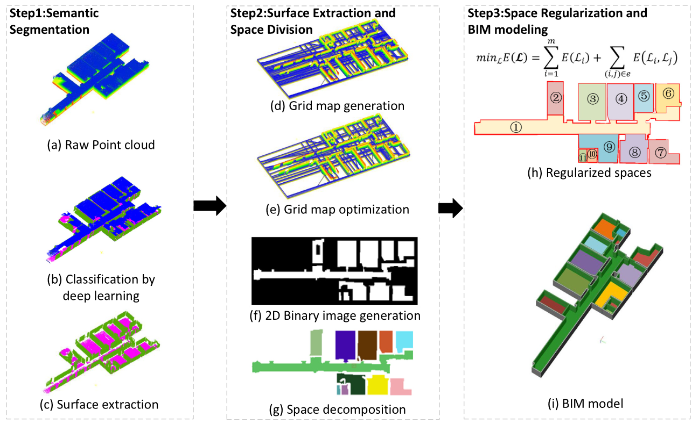
|
BIM generation from 3D point clouds by combining 3D deep learning and improved morphological approach
Shengjun Tang, Xiaoming Li, Xianwei Zheng, Bo Wu, Weixi Wang, Yunjie Zhang
Automation In Construction, 2022 (SCI, Top)
Link
This paper presents a novel parametric modeling method for reconstructing semantic volumetric building interiors from the unstructured point cloud of a building. Unlike existing partitioning-based methods, our proposed method overcomes the limitations by providing a flexible framework for combining 3D Deep Learning and an improved morphological approach for inverse BIM modeling.
|
|
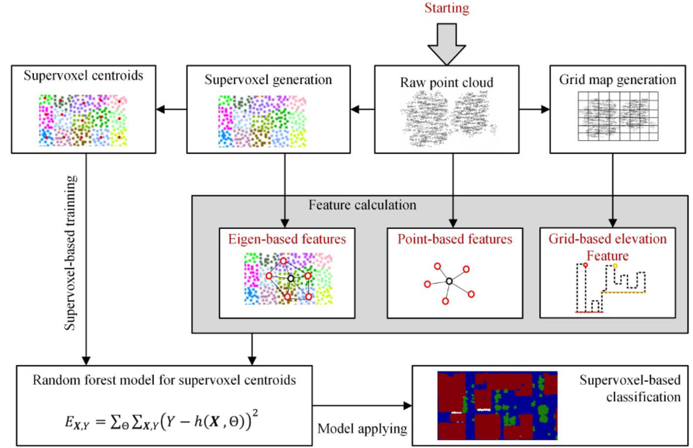
|
A Supervoxel-Based Random Forest Method for Robust and Effective Airborne LiDAR Point Cloud Classification
Lingfeng Liao, Shengjun Tang*, Jianghai Liao, Xiaoming Li, Weixi Wang, Yaxin Li, Renzhong Guo
Remote Sensing, 2022 (SCI, Top)
Link
In this paper, we propose a robust and effective point cloud classification approach that integrates point cloud supervoxels and their locally convex connected patches into a random forest classifier, which effectively improves the point cloud feature calculation accuracy and reduces the computational cost.
|
|
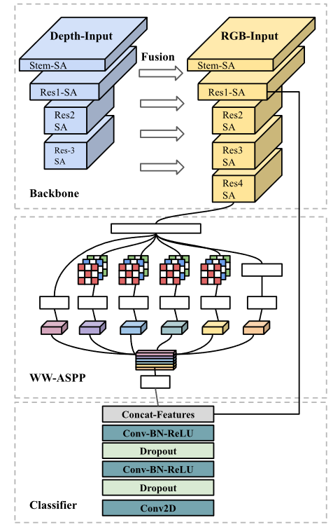
|
PSCNET: EFFICIENT RGB-D SEMANTIC SEGMENTATION PARALLEL NETWORK BASED ON SPATIAL AND CHANNEL ATTENTION
Siqi Du, Shengjun Tang*, Weixi Wang, Xiaoming Li, Yonghua Lu, Renzhong Guo
ISPRS Annals, 2022
Link
RGB-D semantic segmentation algorithm is a key technology for indoor semantic map construction. The traditional RGB-D semantic segmentation network, which always suffer from redundant parameters and modules. In this paper, an improved semantic segmentation network PSCNet is designed to reduce redundant parameters and make models easier to implement. Based on the DeepLabv3+ framework, we have improved the original model in three ways, including attention module selection, backbone simplification, and Atrous Spatial Pyramid Pooling (ASPP) module simplification.
|
|
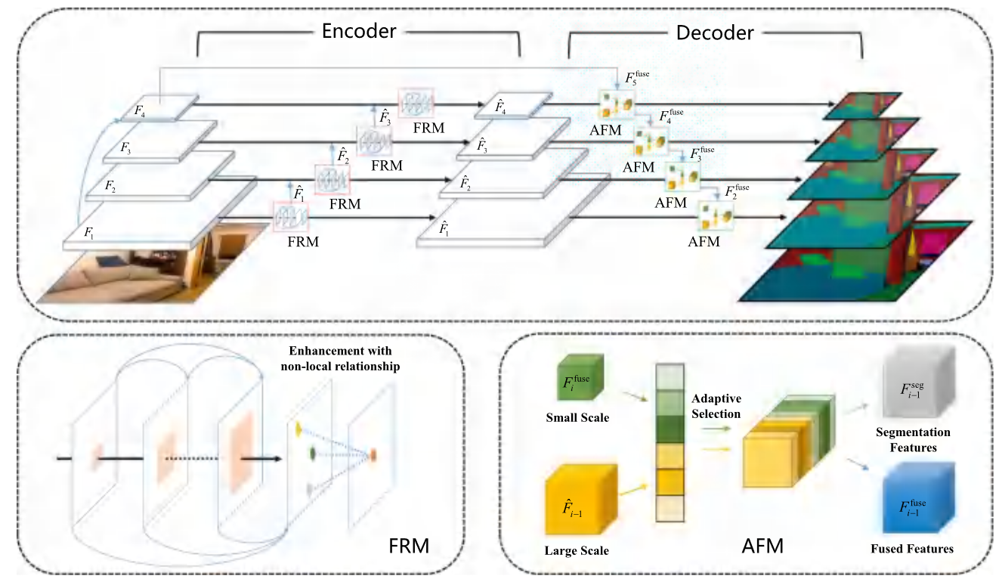
|
Learning deep cross-scale feature propagation for indoor semantic segmentation
Linxi Huan, Xianwei Zheng, Shengjun Tang, Jianya Gong
ISPRS Journal of Photogrammetry and Remote Sensing, 2021 (SCI, Top)
Link
This paper proposes a deep cross-scale feature propagation network (CSNet), to effectively learn and fuse multi-scale features for robust semantic segmentation of indoor scene images. The proposed CSNet is deployed as an encoder-decoder engine. During encoding, the CSNet propagates contextual information across scales and learn discriminative multi-scale features, which are robust to large object scale variation and indoor occlusion. The decoder of CSNet then adaptively integrates the multi-scale encoded features with fusion supervision at all scales to generate target semantic segmentation prediction.
|
|
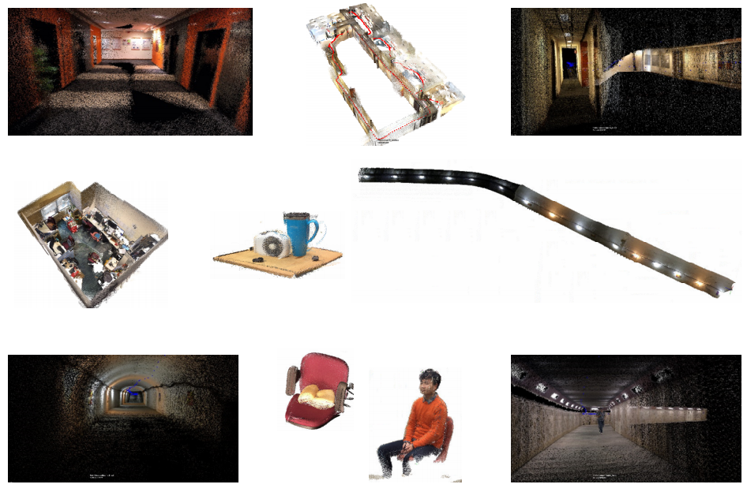
|
A survey on indoor 3D modeling and applications via RGB-D devices
Zhilu Yuan, You Li,Shengjun Tang*, Ming Li, Renzhong Guo, Weixi Wang
Frontiers of Information Technology & Electronic Engineering, 2021
Link
In this survey, we provide an overview of recent advances in indoor scene modeling methods, public indoor datasets and libraries which can facilitate experiments and evaluations, and some typical applications using RGB-D devices including indoor localization and emergency evacuation.
|
|
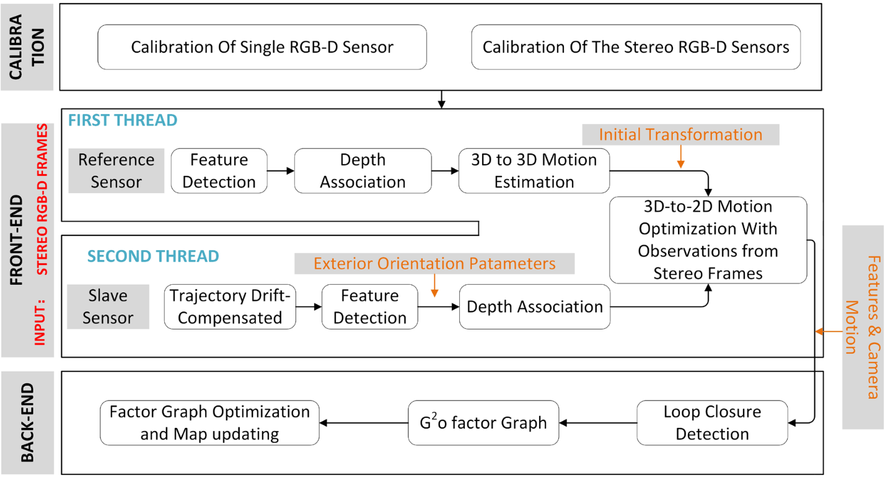
|
Trajectory Drift–Compensated Solution of a Stereo RGB-D Mapping System
Shengjun Tang, Qing Zhu, You Li, Wu Chen, Bo Wu, Renzhong Guo, Xiaoming Li, Chisheng Wang, Weixi Wang
Photogrammetric Engineering & Remote Sensing, 2020
Link
In this paper, we describe the trajectory drift–compensated strategy that we designed to eliminate the influence of time drift between sensors, remove the inconsistency between the sequences from various sensors, and thereby generate a coarse-to-fine procedure for robust camera-tracking based on two-dimensional–3D observations from stereo sensors.
|
|
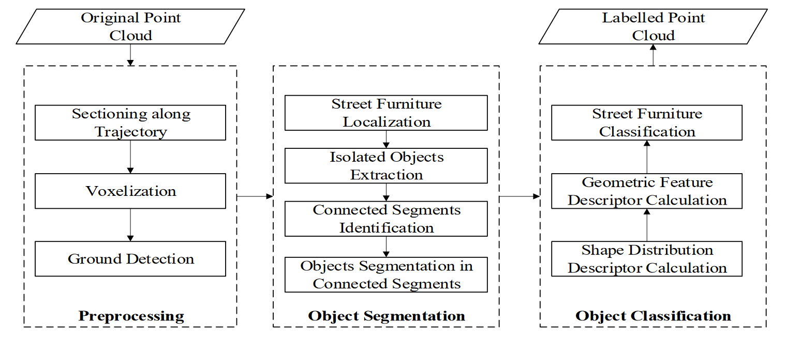
|
Pole-Like Street Furniture Segmentation and Classification in Mobile LiDAR Data by Integrating Multiple Shape-Descriptor Constraints
You Li, Weixi Wang, Xiaoming Li, Linfu Xie, Yankun Wang, Renzhong Guo, Wenqun Xiu, Shengjun Tang*
Remote Sensing, 2019 (SCI, Top)
Link
We present a complete paradigm for pole-like street furniture segmentation and classification using mobile LiDAR (light detection and ranging) point cloud.
|
|
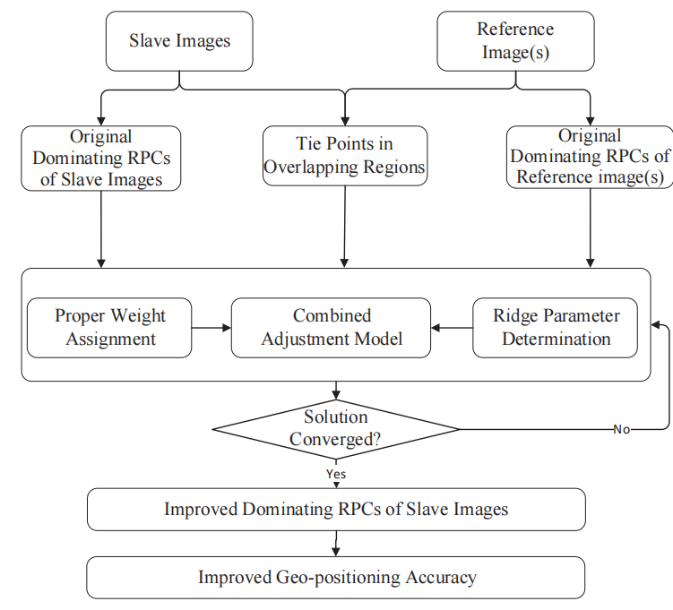
|
Combined adjustment of multi-resolution satellite imagery for improved geo-positioning accuracy
Shengjun Tang, Bo Wu, Qing Zhu
ISPRS Journal of Photogrammetry and Remote Sensing, 2016 (SCI, Top)
Link
This paper presents a combined adjustment approach to integrate multi-source multi-resolution satellite imagery for improved geo-positioning accuracy without the use of ground control points (GCPs).
|
|
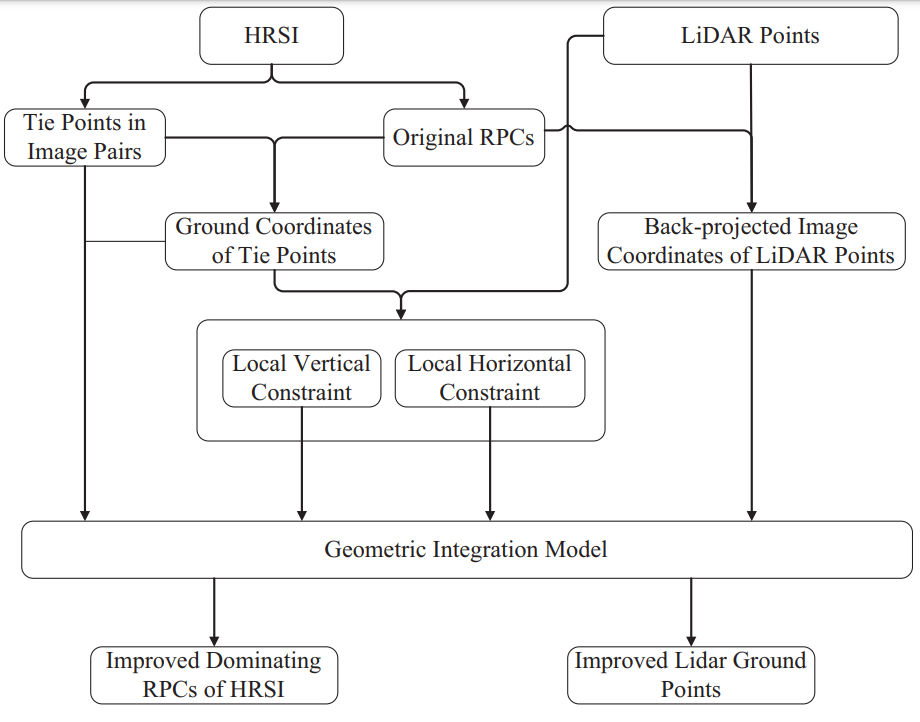
|
Geometric integration of high-resolution satellite imagery and airborne LiDAR data for improved geopositioning accuracy in metropolitan areas
Bo Wu, Shengjun Tang, Qing Zhu, Kwan-yuen Tong, Han Hu, Guoyuan Li
ISPRS Journal of Photogrammetry and Remote Sensing, 2015 (SCI, Top)
Link
Considering HRSI and LiDAR datasets taken from metropolitan areas as a case study, this paper presents a novel approach to the geometric integration of HRSI and LiDAR data to reduce their inconsistencies and improve their geopositioning accuracy.
|
|
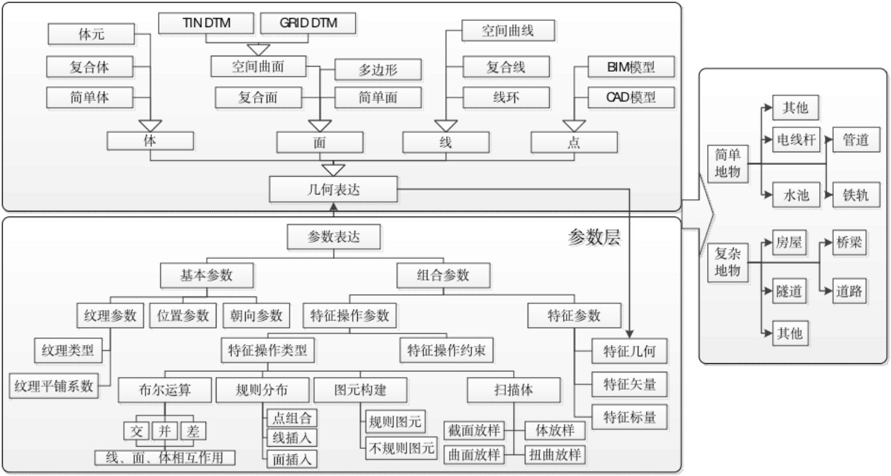
|
三维 GIS 中的参数化建模方法(parametric modeling method in three-dimensional GIS)
汤圣君(Shengjun Tang), 张叶廷(Yeting Zhang), 许伟平(Weiping Xu), 谢潇(Xiao Xie), 朱庆(Qing Zhu), 韩元利(Yuanli Han), 吴强(Qiang Wu)
武汉大学学报（信息科学版）(Geomatics and Information Science of Wuhan University), 2014
Link
为实现大规模地形景观和精细工程设施模型在三维GIS中的无缝集成管理,并支持工程设施全生命周期的共享应用,提出了一种可根据设计参数自动建立复杂设施三维模型并交互式编辑修改的方法,扩展了三维GIS数据模型,实现了三维几何模型与其参数信息的有机集成与同步更新,并以桥梁模型的构建为例验证了该方法的可行性和有效性。(To realize the seamless integrated management of large-scale terrain landscape and detailed engineering facility models in 3D GIS, and to support the shared application of the whole lifecycle of engineering facilities, a method is proposed. This method can automatically build complex facility 3D models based on design parameters and allows interactive editing and modification. This method extends the 3D GIS data model, achieves the organic integration and synchronous update of the 3D geometric model and its parameter information. The feasibility and effectiveness of this method have been verified using the construction of a bridge model as an example.)
|
|
Research projects
- 中华人民共和国科学技术部，国家重点研发计划项目子课题，超大城市绿色低碳发展监测与诊断优化应用示范, 2022YFB3903700， 2022-12 至 2026-11, RMB$248,000,0, PI.
- 广东省面上基金，联合视觉SLAM与深度神经网络的室内场景语义分类与自动化建模技术，2021A1515012574，2021/01/01-2023/12/31，RMB$100,000，PI.
- 深圳市基础研究面上项目，面向机器人自主导航的类脑视觉场景理解与实时位置计算方法，JCYJ20210324093012033，2021/10/28-2024/10/27, RMB$600,000，PI.
- 国家自然科学基金委青年基金，多RGB-D传感器联合的在线室内高精度三维测图方法，41801392，2019/01/01-2021/12/31, RMB$265,000，PI.
- 中国博士后科学基金，多元特征混合优化的RGB-D室内高精度三维测图方法，2018M633133，2018/05/01-2019/09/08,RMB$500,00，PI.
- 深圳市科创委自由探索项目，基于便携式深度传感器的城市封闭/半封闭空间快速三维测图技术研究，JCYJ20180305125131482，2019/01/01-2021/12/31, RMB$300,000，PI.
- 自然资源部城市自然资源监测与仿真重点实验室开放基金, 基于室内高精度三维测图的BIM关键部件自动化重建方法，KF-2019-04-010, 2020/01/17-2021/12/30，RMB$200,000，PI.
- 武汉大学测绘遥感信息工程国家重点实验室开放基金，集成视觉与几何特征的RGB-D SLAM方法，17E04，2018/01/01-2019/12/31, RMB$500,00，PI.
|
|
Awards
- The Best Workshop Presentation Award at the ISPRS Geospatial Week 2023 International Conference for 'Tree-GPT: Modular Large Language Model Expert System for Forest Remote Sensing Image Understanding and Interactive Analysis', 2023.
- 深圳市高层次人才C类(C-Class High-Level Talents in Shenzhen City), 2019.
- 广东省高校科技成果转化大赛电子信息组二等奖(Second Prize in the Electronic Information Category of the Guangdong Provincial University Science and Technology Achievement Transformation Competition)(Rank 2/5), 2020.
- 深圳市南山区"2020创业之星大赛"互联网与移动互联网初创组一等奖(First Prize in the Internet and Mobile Internet Startup Category of the "2020 Entrepreneurship Star Competition" in Nanshan District, Shenzhen City)(Rank 1/3), 2020.
|
|
Academic Service
Committee Member:
- Guest Editor for Remote Sensing, Special issue on “Remote Sensing for 2D/3D Mapping”, From 2023
- Guest Editor for IEEE JSTAR, Special issue on “High-fidelity Urban 3D Modeling and Scene Simulation”, From 2023
- Senior Editor for The Photogrammetry Record, From 2023
- 国际数字地球协会中国虚拟地理环境委员会委员(Member of the China Virtual Geographic Environment Committee of the International Society for Digital Earth), From 2022
- 中国图学学会BIM专委会委员(Member of the BIM Special Committee of the Chinese Society for Graphics), From 2022
- 中国测绘学会位置服务工委会委员(Member of the Location Service Working Committee of the Chinese Society for Surveying and Mapping), From 2022
- Expert of ISO Technical Committee 59, From 2022
Journal Reviewer:
- ISPRS Journal of Photogrammetry and Remote Sensing
- The Photogrammetry Record
- IEEE Journal of Selected Topics in Applied Earth Observations and Remote Sensing
- Automation In Construction
- International Journal of Applied Earth Observation and Geoinformation
- IEEE Transactions on Industrial Informatics
- IEEE/RSJ International Conference on Intelligent Robots and Systems (IROS 2023)
|
|
|
ISPRS Geospatial Week 2023, to be held in Cairo, Egypt from September 2-7, 2023.
Participants: Shengjun Tang, Weixi Wang,Xiaoming Li, Linfu Xie, Siqi Du, Hongsheng Huang
Presentations : Benchmark of synthetic indoor scenes | TreeGPT
|
Template from shiyu jiao's website.
|
{kind=link}